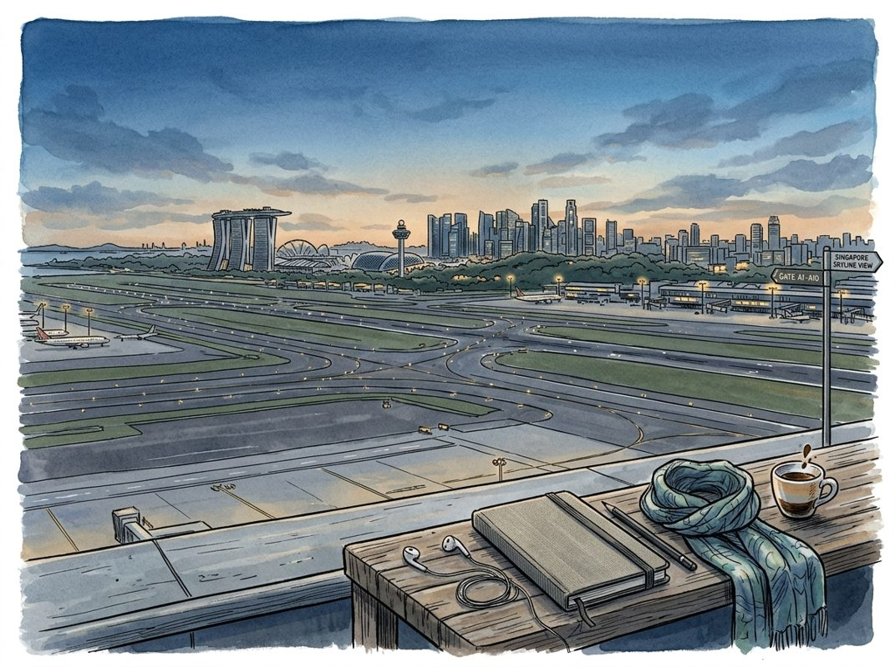

9/19

播客简报 2026-09-19
今日更新
Bill Gurley: Searching for Feynman
来源：All-In with Chamath, Jason, Sacks & Friedberg
原链接：https://allinchamathjason.libsyn.com/bill-gurley-the-covid-cover-up-the-search-for-the-truth
状态：已读完整音频 transcript
这期播客深入探讨了在重大灾难面前，社会如何通过多方独立调查（“探寻者”）揭示真相、找出根本原因并实现有效预防。它通过对比历史上的多起灾难（如公寓倒塌、空难、核事故）与新冠疫情的应对，尖锐地指出，尽管新冠疫情的规模远超以往，但其根源调查却严重缺失，甚至被某些“专家”和机构所阻碍。这期节目适合所有关心公共问责、科学诚信、媒体角色以及未来危机应对机制的中文读者。
- 引言：探寻真相，预防未来：著名投资人比尔·格利（Bill Gurley）在播客中开宗明义，指出他此次演讲的主题并非人工智能，而是一个困扰他五六年的严肃议题：在重大灾难发生后，人类社会应如何探寻真相，以避免悲剧重演。他回顾了自己三年前关于“监管俘获”的演讲，并强调了将重要概念引入公共讨论的价值。格利认为，理解失败的根本原因（root cause）是实现预防（prevention）的关键。他将通过一系列历史案例，展示在这些事件中，哪些力量在积极寻找真相（“探寻者”），哪些力量在阻挠真相（“阻碍者”），以及为何新冠疫情的应对与这些案例形成了鲜明对比。
- 多方“探寻者”的胜利：佛罗里达公寓倒塌与波音737 Max空难：格利首先以2021年佛罗里达州瑟夫赛德（Surfside）尚普兰塔楼（Champlain Towers）倒塌事件为例。这起导致98人死亡的事故，在事后得到了纽约时报、NIST（美国国家标准与技术研究院）、迈阿密先驱报等多个机构的详尽调查。这些“探寻者”通过深入的现场勘查、技术分析和新闻报道，揭示了事故是设计缺陷、维护不善和管理层忽视检查报告等多重因素叠加的“人祸”。迈阿密先驱报甚至因此获得了普利策奖。调查结果促使佛罗里达州及其他沿海州修订了公寓管理法规，实现了有效预防。接着，格利讲述了波音737 Max两次空难（2018年和2019年）的案例。事故原因被查明是波音为适应新引擎而秘密引入的MCAS软件，在传感器故障时错误地将飞机推向地面。美国政府（参众两院委员会、司法部）、印尼调查机构、西雅图时报记者（多米尼克·盖茨，获普利策奖）、举报人、遇难者家属以及飞行员工会等“探寻者”共同努力，克服了波音和FAA（美国联邦航空管理局）的阻挠，最终揭露了真相。这些案例共同说明，多方位的独立调查是找出根本原因、推动制度变革和防止悲剧重演的必要条件。
- 人祸与制度性失灵：卡特里娜飓风与福岛核事故：格利继续列举了卡特里娜飓风（2005年）和福岛核事故（2011年）的例子。卡特里娜飓风造成1800多人死亡，1250亿美元损失。尽管美国陆军工程兵团试图将其归咎于“天灾”，但众议院和参议院委员会、媒体（马克·斯莱特斯汀和约翰·麦凯德，获普利策奖）、国家科学基金会以及路易斯安那州立大学的独立团队等“探寻者”的调查发现，堤坝是因设计和建造缺陷从底部溃决，而非被洪水漫过，这是一场可预防的“人祸”。陆军工程兵团在此过程中扮演了“阻碍者”的角色。福岛核事故同样如此，海啸高度超过了核电站海堤的设计高度，导致发电机被毁、堆芯熔毁。内部文件显示，核电站运营商东京电力公司（TEPCO）和监管机构NISA早已知晓海啸风险，却掩盖了报告。日本国会成立了由医学博士黑川清（Kichiro Kurakawa）领导的独立调查委员会，该委员会拥有巨大权力且成员与涉事机构无关联。黑川清的报告明确指出，福岛事故是“深刻的人为灾难，本可以而且应该被预防”。这些案例揭示了技术故障与制度性失灵（如监管俘获、信息掩盖）往往并存，而独立调查是打破机构阻碍的关键。
- 费曼的独立精神：挑战者号航天飞机灾难：在所有“探寻者”中，格利特别强调了理查德·费曼（Richard Feynman）在挑战者号航天飞机灾难（1986年）调查中的作用。挑战者号事故是由于O形环在低温下失去弹性导致密封失效。里根总统成立的罗杰斯委员会（Rogers Commission）最初由许多内部人士组成，但费曼的加入改变了一切。这位诺贝尔奖得主以其“极其独立、高度追求真相、对不必要的客套毫无耐心”的特质，成为了委员会中的异类。他主动进行独立调查，甚至在电视直播中用冰水演示O形环的失效过程，震惊了所有人。当委员会试图淡化他的发现时，费曼坚持将自己的完整笔记作为附录（附录F）纳入最终报告。费曼的案例表明，真正的真相探寻者必须具备超凡的独立精神和对真相的执着，不畏权威，不惧挑战，即使面对机构的阻挠也要坚持到底。
- 新冠疫情：一场史无前例的灾难，却缺乏真相探寻：格利将上述所有灾难与新冠疫情进行了对比，结果令人震惊。新冠疫情导致全球1500万人死亡，造成45万亿美元的经济损失，其规模是前面所有五起灾难（包括所有空难、飓风、核事故、建筑倒塌和太空事故）死亡人数和经济损失总和的3000倍以上。然而，与以往灾难形成鲜明对比的是，对于新冠疫情的起源，六年后我们仍然没有一个明确的根本原因调查结果。格利指出，在新冠疫情中，我们没有看到：任何一家新闻机构投入30多名调查记者；没有像盖茨或斯莱特斯汀那样长期追踪并获得新闻机构支持的记者；没有像卡特里娜飓风和737 Max空难那样的两党参众两院委员会；没有像费曼或黑川清那样独立的调查委员会；没有国家科学基金会或NIH（美国国立卫生研究院）资助的第三方科学调查；也没有大规模的受害者诉讼来查明真相。这种调查的缺失，对于一场如此巨大的全球性灾难来说，是不可接受的，也为未来的危机埋下了巨大隐患。
Why Diffusion Will Win AI Inference with Inception Co-Founder and CEO Stefano Ermon
来源：No Priors
原链接：
状态：已读完整音频 transcript
这期播客深入探讨了扩散模型在AI推理领域超越传统自回归模型的潜力，强调其固有的并行性带来的速度和效率优势，对于关注AI架构演进、推理成本优化以及生成式AI未来发展方向的从业者和投资者而言，是极具启发性的深度分析。
- 扩散模型之父的创业之路：从学术冷门到产业前沿：斯坦福大学教授、Inception公司联合创始人兼CEO Stefano Ermon回顾了他从2014年开始研究生成模型的心路历程。当时，生成模型领域尚属冷门，研究主要集中在MNIST等小规模数据集上。Ermon教授的早期愿景是构建“世界模型”，通过生成能力来理解数据结构。2019年，他与博士生Yang Song共同开创了基于分数的生成模型，即后来广为人知的扩散模型。这项技术在图像、视频、音乐乃至蛋白质生成等连续数据领域迅速占据主导地位。2024年，Ermon教授的实验室取得突破，首次证明扩散模型在文本生成上能达到与GPT-2规模自回归模型相当的质量，同时推理速度快10倍。这一里程碑式的成果促使他创立Inception，旨在将扩散技术规模化应用于商业语言模型。
- 推理效率：扩散模型超越自回归模型的关键优势：当前生成模型领域存在两大主流范式：以Transformer为代表的自回归模型和扩散模型。Ermon教授指出，尽管Transformer架构通过并行处理实现了训练效率的飞跃，但其推理过程仍是顺序的，即逐个生成token。这种工作负载导致GPU利用率低下，计算受限于内存带宽，而非算力。相比之下，扩散模型采用迭代去噪的“从粗到精”生成方式，其推理过程天然具有高度并行性，与训练时的并行工作负载相似。Inception正是基于这一根本性差异，押注扩散模型，认为其在推理时间上的可扩展性将是未来AI竞争的关键。在AI经济中，模型所能提供的“每美元智能”将成为决定性因素，而扩散模型在这方面具有显著优势。
- 从连续到离散：扩散模型在文本领域的突破：扩散模型最初是为图像等连续数据设计的，因为像素颜色之间可以平滑插值。然而，将这一技术应用于文本、代码等离散数据，面临着“词语之间没有中间状态”的挑战。Ermon教授透露，Inception投入了大量研发，开发了新的科学方法来克服这一障碍。他们的2024年论文证明，在GPT-2规模下，扩散模型在困惑度（衡量模型识别数据结构能力的指标）上与自回归模型持平，这意味着它也能有效地学习离散数据中的复杂模式。这一突破不仅验证了扩散模型在离散数据上的可行性，更重要的是，它在保持质量的同时，实现了10倍的推理速度提升，为语言模型领域带来了新的可能性。
- Inception的商业化实践与技术护城河：Inception成立两年，拥有约50名员工，专注于扩散模型的研发、推理加速和工程化。公司已成功将其Mercury模型投入生产，并在基准测试中展现出与OpenAI等前沿实验室的速度优化模型相当的质量，同时提供更快的推理速度。一个公开案例是语音代理公司OpenCall，他们曾使用定制芯片Cerebras来满足速度需求，但后来转向Inception的扩散LLM，在更易获取的Nvidia GPU上实现了相同的速度、更低的成本和更高的质量。Inception通过核心IP、专有的训练和推理栈（包括自研的服务引擎），以及与客户合作获取反馈和数据，构建了其技术护城河，使其在竞争激烈的AI市场中脱颖而出。
- 效率至上：AI工厂时代的必然选择：在当前计算资源和供应日益受限的环境下，模型效率已不再是次要考虑，而是AI公司最重要的战略决策之一。Ermon教授强调，如果能以更快的速度提供相同质量的模型，用户总是会选择更快的解决方案，这就像宽带升级一样，一旦体验了高速，就难以回退。他认为，软件层面的效率提升与硬件层面的进步是互补的，能够产生乘数效应。未来，甚至可能出现专门为扩散模型优化的硬件。这种对效率的关注，尤其在低延迟应用中至关重要，预示着AI行业将从单纯追求模型规模转向更注重“AI工厂”的整体效率和成本效益。
There's a Mind-Boggling Number of Rich People in America
来源：Odd Lots
原链接：https://omny.fm/shows/odd-lots/theres-a-mind-boggling-number-of-rich-people-in-america
状态：已读网页 transcript
这期播客揭示了美国一个被忽视但数量庞大且极具影响力的富裕群体——“主街百万富翁”，他们是私人企业主，其财富规模和对经济政治的塑造力远超公众普遍认知，挑战了我们对美国财富分布的传统理解。它适合所有对财富不平等、税收政策、美国经济结构以及社会隐形力量感兴趣的中文读者。
- 隐藏的富豪群体：美国“主街百万富翁”的崛起：经济学家欧文·齐达尔（Owen Zidar）和埃里克·兹威克（Eric Zwick）通过对大量税务数据的深入研究，揭示了美国一个令人惊讶的财富真相：存在约三百万私人企业主，他们平均拥有高达2500万美元的财富。这个群体被他们命名为“主街百万富翁”（Main Street Millionaires），与人们通常想象中的硅谷科技巨头或华尔街金融精英不同，他们是遍布美国各地的汽车经销商、建筑承包商、牙医等传统行业从业者。他们的研究成果汇集于新书《无处不在的百万富翁：谁是美国真正的富人以及他们如何致富》中，核心观点在于，这批隐形富豪的数量和财富规模远超预期，对美国经济和政治的影响力不容小觑。他们的存在，迫使我们重新审视美国财富的构成与分布。
- 税务改革与财富追踪的挑战：齐达尔和兹威克的研究并非偶然，其起源可追溯到2014年美国财政部委托他们进行的一项关于私人企业主税负的研究。这项任务异常艰巨，因为自里根总统1986年的税制改革以来，一种名为“穿透式企业”（pass-through businesses）的商业结构以及其他会计手段变得日益普遍。这种结构允许企业利润直接计入所有者个人收入，而非在公司层面征税，使得这些富裕的美国人能够“隐藏在众目睽睽之下”，其真实的财富和税负变得难以准确衡量。传统的财富统计方法往往难以捕捉到这部分通过复杂企业结构积累的财富，导致对美国富人数量和构成存在严重低估。两位经济学家正是通过梳理海量的税务表格，才得以拨开迷雾，揭示出这一庞大而隐秘的富豪群体。
- 谁是“主街百万富翁”？超越传统认知的财富来源：“主街百万富翁”的画像与我们惯常想象的富人形象大相径庭。他们并非那些登上《福布斯》杂志封面的科技新贵或金融大鳄，而是那些在社区中经营着成功企业的普通人。例如，一家地方的汽车经销商可能拥有数百万美元的库存和地产，其财富远超其账面工资；一位成功的建筑承包商可能通过承接大量项目积累了巨额资产；甚至全国牙医行业的总收入，其规模之庞大，竟然超过了美国国家橄榄球联盟（NFL）的集体收入。这些例子生动地说明，财富的积累并非只集中在少数高科技或高金融回报领域，而是广泛分布于传统服务业和制造业中。他们的财富往往与所拥有的企业价值紧密相连，而非仅仅是股票或债券等流动资产。
- 财富不平等与“穿透式企业”的关联：齐达尔和兹威克的研究还揭示了一个关键的因果关系：美国收入不平等的加剧与“穿透式企业”数量的增长呈现出同步上升的趋势。里根时代的税改，特别是对“穿透式企业”的税收优惠，使得企业主能够以更低的个人所得税率而非更高的公司税率来申报利润。这不仅为他们提供了合法的避税途径，也使得这部分财富的积累速度加快，进一步拉大了与普通工薪阶层之间的收入差距。由于这些企业利润直接流向个人，且往往通过复杂的会计操作进行管理，使得政府在追踪和征收这部分财富的税款时面临巨大挑战，从而加剧了财富分配的不透明性和不平等现象。
- “主街百万富翁”对经济和政治的影响：这三百万“主街百万富翁”不仅在经济上拥有巨大财富，他们对美国的经济和政治格局也产生了深远的影响。在经济层面，他们是地方经济的支柱，通过经营企业创造就业、提供服务和商品，驱动着社区的繁荣。他们的投资决策、扩张计划以及对当地市场的理解，直接影响着无数中小企业和普通民众的生活。在政治层面，作为一个庞大且拥有共同利益的群体，他们的集体声音和影响力不容忽视。他们可能通过行业协会、地方商会或直接的政治捐款，影响税收政策、监管法规以及其他与商业运营相关的立法。这种影响力往往是分散且隐蔽的，但其累积效应足以塑造美国的经济政策走向和政治版图。
历史精选
Coca-Cola
来源：Acquired
原链接：https://www.acquired.fm/episodes/coca-cola
状态：已读网页 transcript
这期播客深入剖析了可口可乐如何从内战后的专利药水，通过卓越的品牌塑造、创新的分销模式（瓶装系统）、不懈的商标保护和精准的市场营销，成长为全球饮料巨头，是理解美国商业史和品牌建设的绝佳案例，适合所有对企业发展、商业模式创新和品牌力量感兴趣的听众。
- 查理·芒格的设想与可口可乐的“商业秘籍”：播客以查理·芒格的一个思想实验开篇：如何在19世纪80年代，用200万美元启动一个非酒精饮料业务，最终实现2万亿美元的市值，并在此过程中持续派发巨额股息。这听起来几乎不可能，但可口可乐的百年发展轨迹，几乎完美地诠释了其“秘籍”：建立一个强大且受保护的全球品牌，产品口味普适，能提供能量和愉悦感（糖、咖啡因），随时随地以低价供应，并通过广告将产品与幸福生活关联。更关键的是，它需要一个巧妙的机制，利用他人的资本和员工进行瓶装和分销，同时保持品牌控制。最后，配方和口味绝不能改变。可口可乐在长达140年的历史中，正是遵循了这一套“剧本”，从美国内战后一路走来，融入了美国社会的方方面面。
- 专利药水时代：可口可乐的诞生背景：可口可乐的故事始于美国内战后的混乱时期。大量退伍军人饱受慢性疼痛困扰，对吗啡等止痛药上瘾（被称为“军队病”），催生了“专利药水”市场的繁荣。这些药水承诺包治百病，成为美国最早的全国性品牌，也催生了现代广告业。约翰·彭伯顿博士，一位内战老兵，也深受吗啡之苦。他在19世纪80年代中期，受到当时风靡的古柯叶葡萄酒（Vin Mariani，含有可卡因，并得到爱迪生、麦金莱总统甚至教皇的背书）启发，将古柯叶与非洲可乐果（富含咖啡因）结合，创造了“彭伯顿的法国古柯酒”。1885年亚特兰大禁酒令颁布后，他被迫开发出无酒精版本，这便是“软饮料”概念的起源，也是可口可乐的直接前身。
- “秘密配方”与早期营销奇迹：彭伯顿将产品定位从药水转向“随时可享的提神饮品”，定价5美分。他利用默克公司合成的咖啡因，并加入大量糖来平衡可乐果和古柯叶的苦味，最终调配出独特的配方。早期的可口可乐咖啡因含量是今天的四倍，加上微量可卡因，使其成为一种强效提神饮料。彭伯顿的簿记员弗兰克·罗宾逊不仅将其命名为“Coca-Cola”，还设计了沿用至今的斯宾塞体商标。他们还开创性地推出了美国历史上第一个制造商优惠券，免费派发给消费者，这不仅刺激了需求，也激励了药店和销售员，因为每加仑糖浆1.3美元的成本能带来6.4美元的零售收入，利润丰厚。这种模式迅速推动了可口可乐在亚特兰大及周边地区的普及。
- 阿萨·坎德勒的整合与广告攻势：彭伯顿在去世前将配方权利零散出售，最终由亚特兰大商人阿萨·坎德勒在1891年以2300美元的价格整合了所有权利，并于1892年成立了可口可乐公司。在他的领导下，公司实现了专业化运营。1892年，公司营收4.6万美元，利润1.2万美元，对于当时仅有三名员工的企业来说，利润惊人。坎德勒和罗宾逊大力投资广告，初期广告强调其“脑部滋补品”和“治疗头痛神经衰弱”的药用功效。但罗宾逊很快意识到，应将产品定位为“美味提神”的饮品，面向大众而非病人，并将其与积极情绪关联。他们将可口可乐的标志印在各种促销品上，包括油布招牌、壁画、日历、托盘等，甚至免费为药店制作带有可口可乐标志的招牌，使其看起来像可口可乐的特许经营店，极大地提升了品牌知名度。到1895年，可口可乐已销往美国所有州和地区。
- 瓶装系统：杠杆化扩张的商业奇迹：1899年，两位查塔努加的商人本杰明·托马斯和约瑟夫·怀特海德向坎德勒提出瓶装可口可乐的请求。尽管坎德勒对此持怀疑态度，但最终以1美元（从未收取）的象征性价格，授予他们在美国大部分地区独家、可转让的瓶装和销售权，并以每加仑1美元的折扣价供应糖浆，同时承诺承担所有广告费用。这一协议被认为是“历史上最愚蠢的交易”之一，却也成为可口可乐的第二个伟大商业模式创新。托马斯和怀特海德随后将权利分包给全国各地的小型瓶装商，形成了“母瓶装商”和“一线瓶装商”的层级结构。这使得可口可乐公司无需投入大量资本，便能迅速将产品分销到全国的杂货店、小摊和沙龙，实现了前所未有的“闪电式扩张”，将可口可乐带入千家万户，成为美国“可口可乐系统”的基石。
ASML: Competing with Moore’s Law - [Business Breakdowns, REPLAY]
来源：Business Breakdowns
原链接：https://colossus.com/episode/reed-asml-competing-with-moores-law/
状态：已读网页 transcript
这期播客深入剖析了ASML如何从飞利浦的弃子成长为全球半导体产业不可或缺的巨头，尤其适合关注科技创新、全球供应链和长期投资价值的专业人士及爱好者。
- ASML的崛起与光刻技术基石：ASML的故事始于其作为飞利浦一个不起眼的子部门，在半导体产业的早期阶段，它选择了一条当时看来并非主流的道路——专注于光刻技术。光刻是芯片制造的核心环节，通过将光线精确地投射到硅片上，刻画出纳米级的电路图案，这直接决定了芯片的性能和集成度。播客深入探讨了半导体和光刻技术的科学原理，解释了其复杂性。ASML凭借对这一复杂技术的深耕，逐步从一个挑战者成长为行业的领导者。如今，ASML已是全球半导体设备领域最重要的公司之一，尤其在极紫外（EUV）光刻技术上拥有无可匹敌的地位，成为推动全球科技进步的关键力量。其发展历程充分展现了长期专注和技术积累的巨大价值，也让人思考公司在早期可能选择的其他业务方向，但最终的坚持成就了今天的辉煌。
- 摩尔定律的驱动者与EUV的突破：摩尔定律指出，集成电路上可容纳的晶体管数量大约每两年翻一番，这驱动着半导体产业的持续创新。ASML的光刻技术正是实现摩尔定律的关键工具。播客详细探讨了光刻技术中紫外（UV）光源的演进，从深紫外（DUV）到极紫外（EUV）的飞跃，解释了其在推进芯片微缩化中的重要作用。EUV技术利用波长极短的光线，使得在硅片上刻画出纳米级的精细图案成为可能，从而大幅提升了芯片的集成度和性能。ASML在EUV领域的独家技术突破，不仅巩固了其市场地位，更解锁了芯片设计和制造的无限潜力，是现代高性能计算、人工智能和5G等前沿技术发展的基石。这些庞大而复杂的机器，其尺寸和精密程度本身就是工程奇迹。
- 竞争格局、成本与机器生命周期：光刻机市场是一个技术壁垒极高的领域，虽然存在其他竞争者如尼康和佳能，但在最尖端的EUV技术方面，ASML几乎没有直接的竞争对手，形成了事实上的垄断。一台EUV光刻机的研发投入高达数十亿美元，其制造过程涉及全球顶尖的精密光学、机械、真空和软件技术，是人类工程学的巅峰之作，成本高昂。这些机器的单价极其昂贵，且生命周期长达数十年，需要持续的维护和升级。ASML的商业模式不仅包括销售全新的EUV设备，还通过提供持续的维护、升级和翻新服务，从现有机器中获得可观的收入。这种模式确保了客户的长期依赖，并为ASML带来了稳定的现金流和高额利润，进一步强化了其技术垄断地位和盈利能力。
- 商业模式：周期性、利润与客户集中度：半导体行业以其显著的周期性而闻名，ASML的营收也自然受到全球芯片需求波动的影响。然而，由于其EUV技术的稀缺性和战略重要性，ASML的产能而非市场需求，往往成为其出货量的主要限制因素，导致供不应求。公司享有极高的毛利率和净利润率，这反映了其技术的独特性和在价值链中的核心地位。播客还探讨了ASML如何通过其技术优势来设定价格。ASML的客户群体高度集中，主要服务于全球少数几家顶级的晶圆代工厂和IDM厂商，如台积电、三星和英特尔。这种客户结构虽然带来了稳定的巨额订单，但也意味着ASML的业绩与这些大客户的资本支出计划紧密挂钩，存在一定的集中风险和地缘政治敏感性。
- 投资视角与未来风险：从投资者的角度来看，ASML展现出强大的财务实力，拥有充裕的现金流，这些资金被战略性地投入到持续的研发中，以保持技术领先，并用于回馈股东。播客分析了ASML的投资机会和其现金流的去向。然而，ASML也面临着多方面的潜在风险。地缘政治紧张局势可能导致技术出口限制或供应链中断；技术迭代的挑战要求公司不断投入巨资进行创新；而客户高度集中则意味着任何一家主要客户的资本支出调整都可能对ASML的业绩产生显著影响。此外，全球经济波动和半导体行业自身的周期性也是其需要应对的外部风险。播客也探讨了为何ASML至今未被收购，以及从其发展中可以学到的宝贵经验。